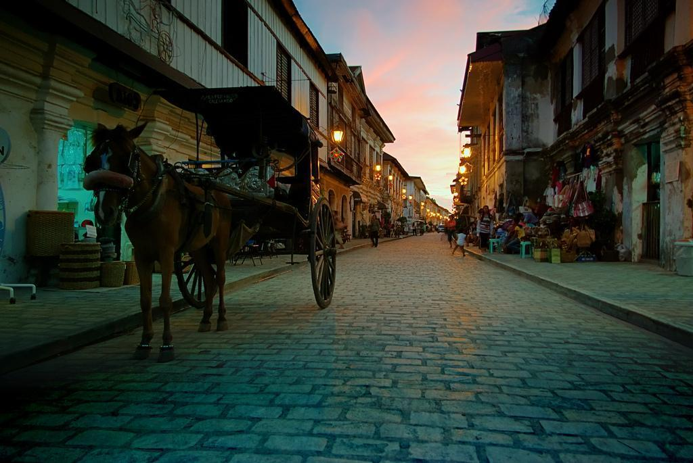

Heritage
Walk through ancestral houses, plazas, museums, and landmark architecture.

Discover Vigan City's preserved colonial streets, local flavors, living traditions, and memorable destinations through one elegant travel guide.
Why visit Vigan?
Vigan City is on the western coast of Luzon in Ilocos Sur and is known for its preserved Spanish colonial townscape. Its architecture and culture reflect a distinctive meeting of Asian and European influences.
Walk through ancestral houses, plazas, museums, and landmark architecture.
See traditions such as burnay pottery and experience the city's local character.
Make room for Vigan empanada, okoy, cafés, and classic Ilocano dishes.
Featured places
Explore smarter
Search places, focus markers, view destination details, find your current location, and open turn-by-turn directions.